Four days ago we launched a real-time browser ocean simulator (SimAMOC) running on WebGPU. It works — the gyres are there, the AMOC bifurcates under freshwater forcing — but at higher resolution we kept getting stuck. The GPU FFT Poisson solver outputs all-zero psi for reasons we never tracked down. Days of debug were vanishing into WGSL.
So we restarted from a different place: compute first. JAX core, runs on a Mac (CPU/Metal) and a rented GPU (CUDA) from one codebase, no browser in the inner loop. The browser viewer becomes a downstream consumer of saved state, not the simulator itself.
This post is the alignment + audit before we go further. It covers: where the project is now, every map and dataset we depend on, the v1a result that just shipped, and the v1a→v1d plan toward an AMOC bifurcation demo that's actually defensible against modern literature.
amoc-jax on GitHub Physics doc Roadmap Data layer
The original SimAMOC was structured around the browser. Physics ran in WGSL compute shaders; the visualization was painted from the GPU buffers directly. Beautiful when it worked, hostile to debug when it didn't — and a stuck FFT Poisson kernel was a hard wall.
amoc-jax inverts the dependency:
| Layer | v0 (SimAMOC, browser) | v1 (amoc-jax) |
|---|---|---|
| Physics | WGSL compute shaders | JAX, jit'd, runs on Mac CPU and cloud GPU from one codebase |
| Poisson solver | Custom WebGPU FFT (broken at higher res) | jnp.fft + DST-I; round-trip-tested to numerical precision |
| Output | GPU buffers, lost on reload | PNG + npz now; zarr next, for the browser viewer to consume |
| Differentiability | None | JAX autodiff — opens parameter fitting in v2 |
| Tests | Visual | 21 property tests; physical-correctness layer planned |
The browser viewer (launch v0) and its 14 visualization modes, paleoclimate scenarios, and editable coastlines all stay. They just become a viewer over a real simulator instead of being the simulator itself.
Every observational field the project depends on is catalogued in
data_manifest.yaml.
A scripts/data_status.py walks the filesystem and validates
shape + value ranges + hex-mask integrity (28/29 fields green right now;
the only missing one is coastlines.json, viewer-only).
Two clean tiers, both global lat-lon:
hires (1024×512, ~0.35°) in data/,
fetched from Earth Engine via fetch-data-hires.py; and
lores (360×160, 1°) at the repo root, the legacy
1° tier kept as fallback. Hires is the right resolution for
v1a–d goals — it resolves the Gulf Stream as a feature
(~3 cells wide), Drake Passage, Mediterranean. It does not resolve
mesoscale eddies (~50 km, that's eddy-resolving 0.1° territory and a
v3+ problem).
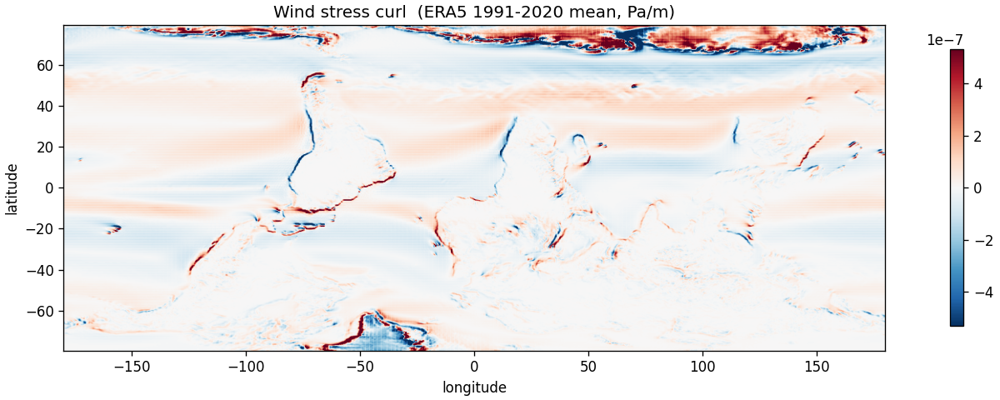
Wind stress curl, ERA5 1991–2020 mean. The spatial pattern of curl is what drives Sverdrup gyres — positive curl in subpolar regions, negative in subtropics. This single field is the entire forcing for v1a.
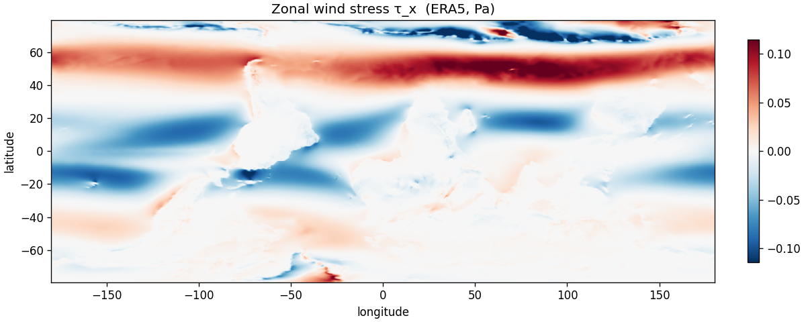
Zonal wind stress τx: trades, mid-latitude westerlies, polar easterlies all visible
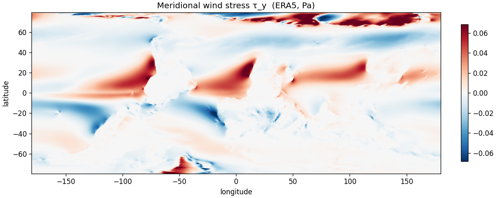
Meridional wind stress τy: drives Ekman in v1b/c
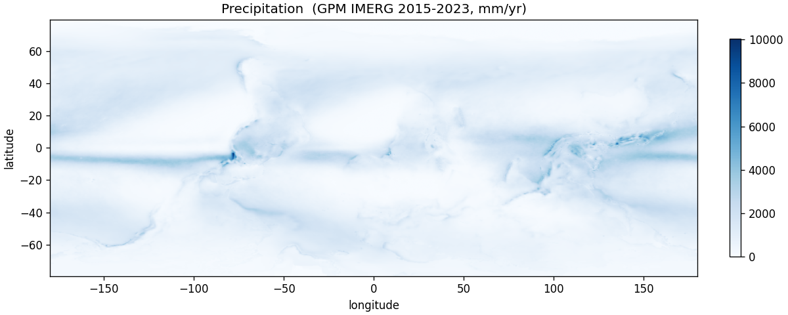
Precipitation, GPM IMERG. ITCZ + storm tracks visible. Drives ocean freshening in v1c/d
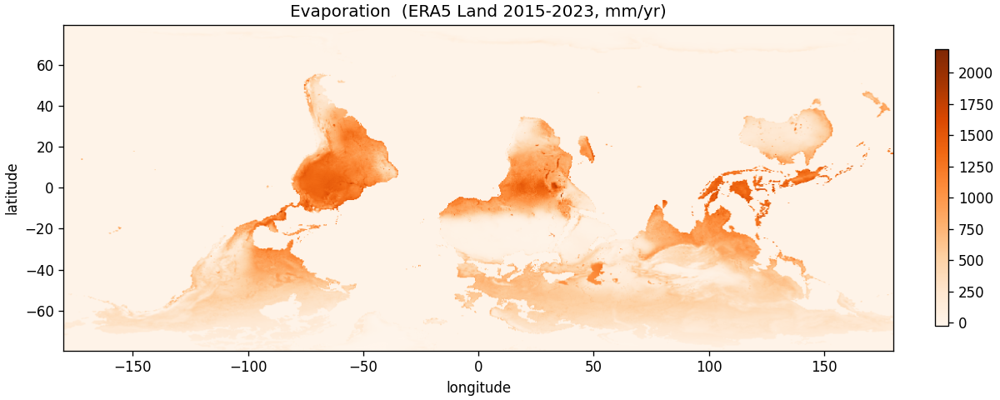
Evaporation, ERA5 Land. Subtropical maxima → salinity concentration
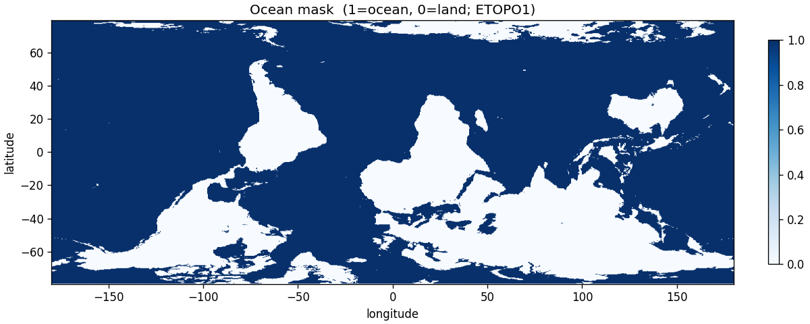
Ocean mask, derived from ETOPO1. Hex-packed bit array (4 bits per char). 1=ocean, 0=land
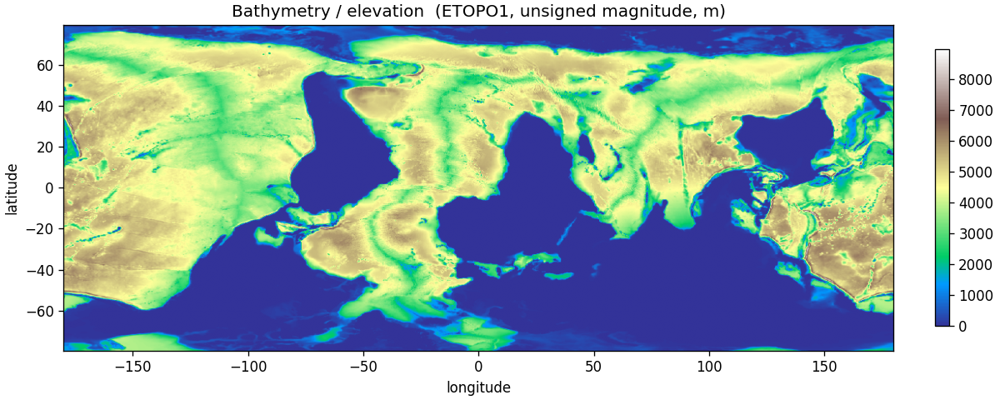
Bathymetry/elevation, ETOPO1. Note: unsigned magnitudes — both ocean depth and land elevation come out positive
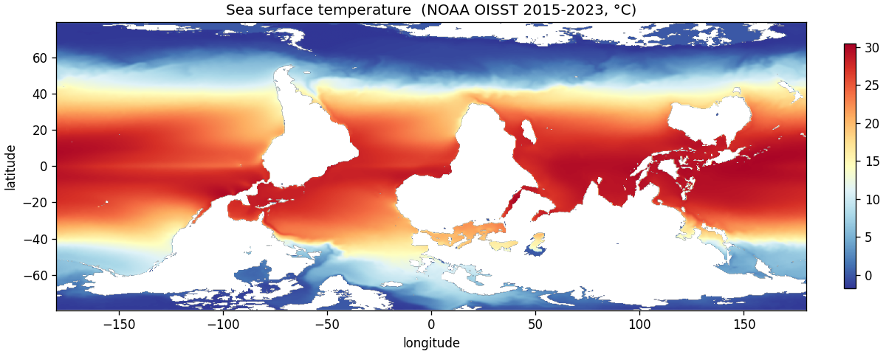
SST, NOAA OISST 2015–2023. Initial T at the surface; restoring target for v1c; primary RMSE metric
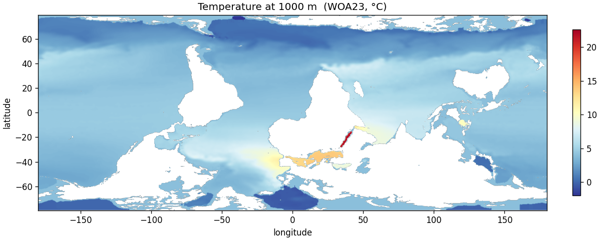
Temperature at 1000 m, WOA23. Initial T for the deep layer in v1b; the stratification check that gates deep-water formation
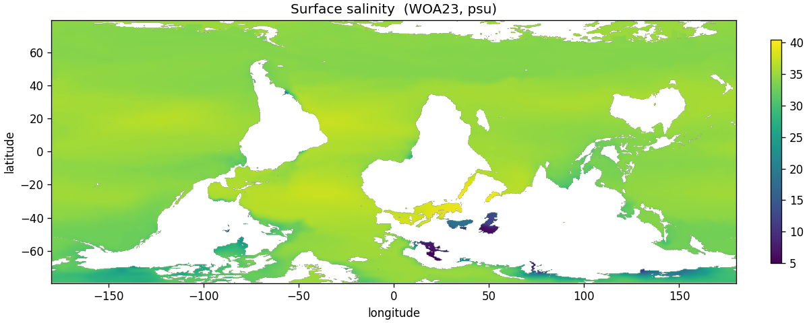
Surface salinity, WOA23. The salt-advection feedback that drives Stommel bifurcation lives here
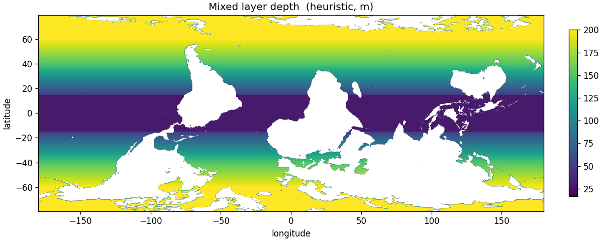
Mixed layer depth (heuristic). Sets the interface between surface and deep layers in v1b
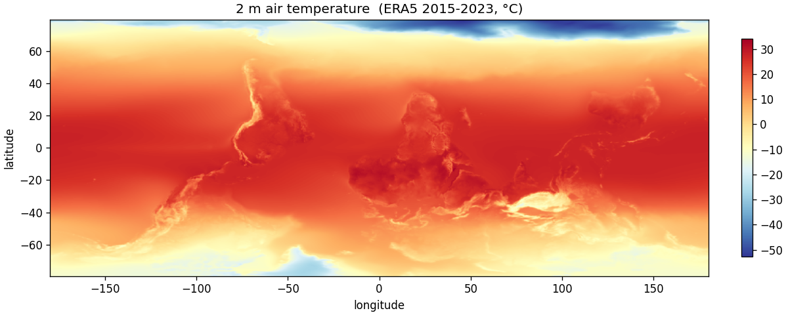
2 m air temperature, ERA5
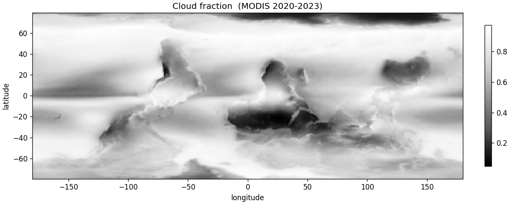
Cloud fraction, MODIS
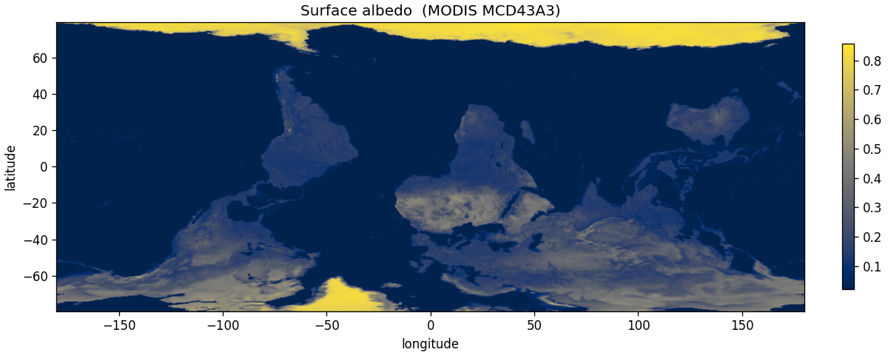
Surface albedo, MODIS MCD43A3
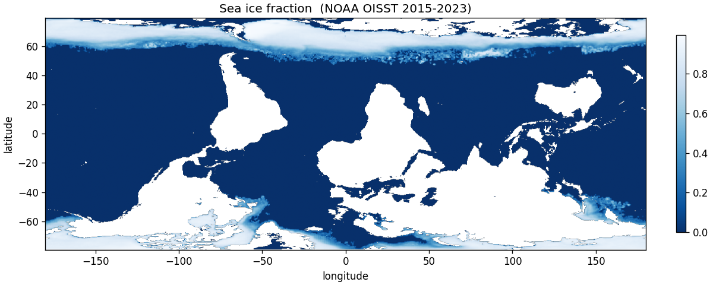
Sea ice fraction, NOAA OISST
That's 15 spatial fields, plus monthly climatologies for SST, wind, and
albedo, plus 1D time series (RAPID AMOC at 26.5°N, Mauna Loa CO2,
HadCRUT5 global temperature). The full machine-readable manifest with
roles, sources, fetch scripts, and sanity bounds is in
data_manifest.yaml.
The barotropic vorticity equation, on a global lat-lon grid, masked at land cells, integrated forward under ERA5 wind-curl forcing from rest. This is Stommel (1948) + Munk (1950) with the Arakawa (1966) energy-conserving Jacobian:
∂tζ + (1/cosφ) J(ψ,ζ) + β ∂λψ = curl(τ) − rζ + A∇²ζ
After 10,000 RK2 steps at 256×128 (~25 s on a Mac CPU), with ζ=0 initial condition and the wind curl above, this is what we get:
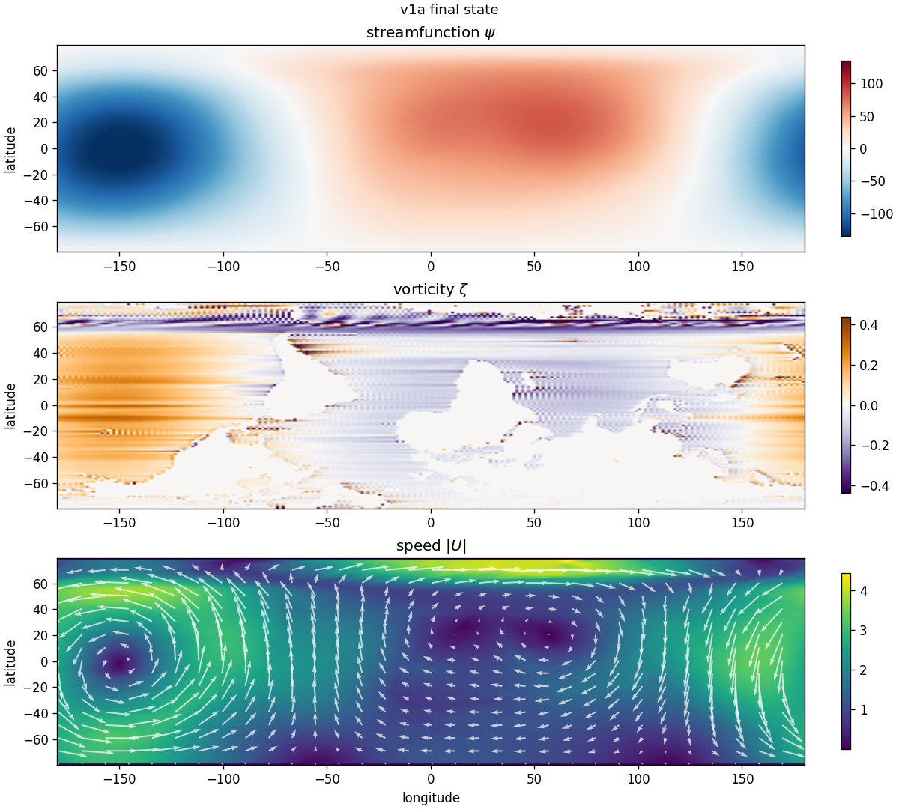
v1a steady state. Top: streamfunction ψ. Negative (blue) at high northern latitudes — cyclonic subpolar gyre. Positive (red) in the subtropics — anticyclonic subtropical gyre. Middle: vorticity ζ. Bottom: speed |U| with current vectors. The Atlantic and Pacific basins each have a closed gyre circulation; the western boundary intensification is visible as the bright currents on the western edges of each subtropical gyre; the ACC band is visible in the south. From rest under nothing but observed wind curl.
The spin-up sequence:
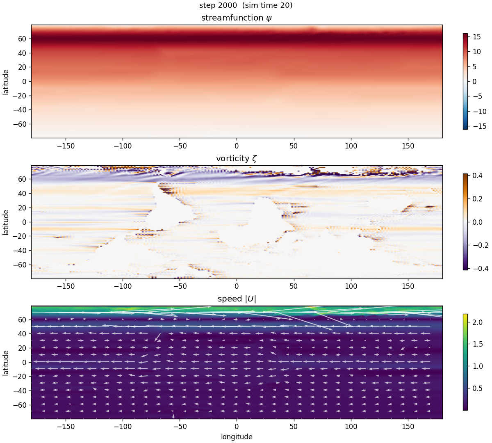
Step 2000 (early spin-up): zonal flow, gyres just starting
Step 10000 (steady state): full gyre structure
v1a didn't work on the first run. We got zonal stripes, not gyres. The fix turned out to be a single line of physics, but finding it required deriving the equation from scratch.
On a sphere, the streamfunction defines velocity as
u = −(1/R) ∂φψ,
v = (1/(R cosφ)) ∂λψ. The
planetary vorticity gradient is β = (1/R) df/dφ = 2Ω cosφ/R.
When you compute the β⋅v term, the cos(φ) factors cancel
exactly:
βv = (2Ω cosφ / R) · (1/(R cosφ)) ∂λψ = (2Ω / R²) ∂λψ
β⋅v has no metric factor in (λ, φ)
coordinates. The original SimAMOC implementation has
betaV = beta * cos(lat) * dpsi/dx — an extra cos(φ)
factor that double-counts the metric. It suppresses β at high
latitudes (where it should be strongest) and amplifies it near the equator.
We inherited the same bug. Removing the spurious cos(φ) is what made
gyres actually appear.
Full derivation in the physics doc. A physical-correctness test — "does the simulator reproduce the Munk analytical solution?" — would have caught this in CI before we ever stared at PNGs. That's a key gap to close before v1b.
| Component | Status | Notes |
|---|---|---|
| Project scaffold (uv, pyproject, src layout) | Done | Mac M-series + cloud CUDA from one codebase |
| Grid, data loader, Poisson solver, state types | Done | 21 unit/property tests passing |
| Arakawa Jacobian + barotropic vorticity RHS | Done | Energy-/enstrophy-conserving 9-point form |
| RK2 stepper, jit'd, jax.lax.scan | Done | ~480 steps/sec at 256×128 on Mac CPU |
| Renderer, driver, atlas script | Done | PNG + npz output |
| Data manifest, status checker, docs | Done | 28/29 fields green |
| v1a barotropic gyres | Done | Subpolar + subtropical gyres + ACC |
| 1024×512 native-resolution run | Done | Stable at dt=0.0025; ~31 steps/sec on CPU |
| Prior-art research | Done | 5 reports: JAX codes, GCM survey, AMOC lit, recent work, blogs |
| Physical-correctness tests (Munk, Sverdrup, conservation) | Next | Would catch the cos(φ) class of bug in CI |
| Zarr writer (browser viewer integration) | Next | Lets the v0 viewer read JAX output directly |
| v1b deep layer + buoyancy coupling | Next | First MOC diagnostic |
| Cloud GPU deploy | Later | scripts/run.py --device cuda, Lambda/RunPod |
| CI | Later | GitHub Actions running pytest + regression tests on every PR |
The end goal is a defensible AMOC bifurcation demo: a freshwater hosing experiment in the North Atlantic that produces the canonical hysteresis curve from Rahmstorf (1996), with a bifurcation mechanism that recent literature (van Westen et al. 2024 in Sci Adv, Kuhlbrodt & Dijkstra 2025 in ESD) has now confirmed appears in state-of-the-art GCMs as well as the simple Stommel box model. We get there in four phases:
What you've seen above. Wind-driven Sverdrup/Munk circulation. Validates the entire compute pipeline before adding density.
Add a deep layer with its own ψd and its own Poisson solve, coupled to the surface layer through a thermal-wind buoyancy term. With a prescribed meridional buoyancy gradient, this produces a meridional overturning streamfunction Ψ(y) on top of the wind-driven gyres.
Diagnostic milestone: visible MOC cell when we project Ψ into the (latitude, depth) plane.
Replace the prescribed buoyancy with active T and S equations. Surface T
restored to data/sst.json climatology with a Haney-style
relaxation; surface S restored to WOA23 with a freshwater flux from
precipitation minus evaporation; convective adjustment when surface
buoyancy exceeds deep buoyancy. Linear equation of state.
Validation milestone: SST RMSE under 3°C globally; deep-water formation regions in the Labrador and Nordic seas; AMOC strength scales roughly like Bryan (1987): Ψ ∝ κ2/3.
Add a freshwater flux F to the North Atlantic surface salinity. Slowly ramp F up; AMOC weakens and eventually collapses (the salt-advection feedback that Stommel identified in 1961 stops working). Slowly ramp F back down; recovery is delayed — the system sits in a salt-mode stable state until F falls well below the collapse threshold. That's the Rahmstorf hysteresis loop; reproducing it is the project's raison d'être.
Diagnostics added at this stage: FovS (freshwater transport at 34°S, the operationalized indicator from van Westen et al. 2025 JGR Oceans); time series of the AMOC streamfunction at 26.5°N to compare against the RAPID array record.
Once v1d produces real bifurcation runs, we hook the original SimAMOC renderer up to read frames from a zarr store. The 14 viz modes, paleoclimate scenarios (open Drake Passage, close Panama), editable coastlines — all of that becomes a window into a simulation that is now a real ocean model, not a tuned demo.
Foundational: Stommel 1948/1961, Munk 1950, Sverdrup 1947, Arakawa 1966, Wright & Stocker 1991, Cessi 1994, Vallis 2017 Atmospheric and Oceanic Fluid Dynamics (chapters 5/14/19/21), Rahmstorf 1996.
Recent (2020–2026), the literature this project actually has to be in dialogue with:
The closest sibling JAX code we draw inspiration from but don't fork:
The closest existing public tool is amocscenarios.org (van Westen group), which is a viewer over pre-computed CESM AMOC-collapse output. Same architectural pattern as where we're heading; different physics core. The browser-native + JAX-physics + interactive AMOC niche is genuinely empty.
This is the moment to push back if any of this is wrong.
The full record — physics doc, roadmap, data layer, manifest, code, tests — is in the amoc-jax/ directory.
Source Physics Data layer Roadmap Previous post (v0 browser model)
Built with Claude Opus 4.7 (1M-context). Code at
github.com/JDerekLomas/amoc,
under the amoc-jax/ subdirectory. Reproducible runs:
uv pip install -e ".[dev]" && python scripts/run.py.